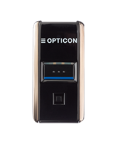
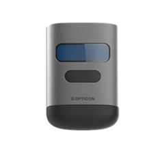

opticonnect sdk
OptiConnect SDK enables seamless integration with Opticon's BLE OPN-2500 and OPN-6000 barcode scanners. This SDK allows you to manage Bluetooth Low Energy (BLE) connections, handle scanner data streams, and programmatically control scanner settings via commands.
Features
Bluetooth discovery and connection management for OPN-2500 and OPN-6000 BLE scanners.
Real-time data streaming, including barcode data reception and BLE device state monitoring.
Programmatic control of scanner settings (e.g., scan modes, illumination, connection pooling, etc.).
Exclusive connection management: Ensure stable device pairing in multi-device environments by assigning unique connection pool IDs, preventing previously paired devices from hijacking active connections.
Command management and customization for BLE services and scanner configurations.
Getting Started
1. Prerequisites
At least one of the following Opticon BLE barcode scanners is required:
|
 |
 |
2. System Requirements
Android Minimum SDK: 26
Compile SDK: 36
Android Build Tools: 36.0.0
JDK Version for building: 17
Gradle Wrapper: 8.13
Kotlin/AGP: use the versions pinned in
gradle/libs.versions.tomlRuntime target: apps can support Android 8.0+ as long as
minSdkstays at 26 or lower APIs are explicitly tested
3. Building the opticonnect .aar library (optional)
To build the .aar file for the OptiConnect SDK with shadowed dependencies, run:
./gradlew :opticonnectsdk:bundleShadowedReleaseAarOn Windows, run the same task with:
.\gradlew.bat :opticonnectsdk:bundleShadowedReleaseAarThis task builds the SDK, creates the relocated classes.jar, and packages the final AAR. The generated file will be located at opticonnectsdk/build/outputs/aar/opticonnectsdk.aar.
The shaded AAR intentionally relocates SDK-internal dependencies such as Room, Dagger, SQLite, and Timber to reduce conflicts with the host app. External runtime/API dependencies such as Kotlin, coroutines, RxAndroidBLE, and RxKotlin should remain normal app dependencies so the host app can control those versions.
4. Adding the .aar library to your project
The .aar file (opticonnectsdk.aar) is provided at the following location. The library is already included in both the Kotlin and Java examples in their libs directories. To integrate the library into your own project, perform the following steps:
Copy
opticonnectsdk.aarto your project’s libs directory if it’s not already there.Add the .aar file to your dependencies in build.gradle(.kts) as explained in the following section.
5. Updating your build.gradle(.kts)
Add the .aar file and required dependencies to your build.gradle(.kts) file under dependencies. Below is the recommended setup:
Shared Dependencies for Java and Kotlin Projects
dependencies {
// Include the .aar file
implementation(files("libs/opticonnectsdk.aar"))
// Required external dependencies not bundled into the shaded AAR
implementation("androidx.core:core:1.17.0")
implementation("com.polidea.rxandroidble3:rxandroidble:1.19.1")
implementation("io.reactivex.rxjava3:rxkotlin:3.0.1")
// Required by the SDK runtime and Kotlin Flow-based APIs
implementation("org.jetbrains.kotlinx:kotlinx-coroutines-core:1.11.0")
implementation("org.jetbrains.kotlinx:kotlinx-coroutines-android:1.11.0")
implementation("org.jetbrains.kotlinx:kotlinx-coroutines-rx3:1.11.0")
}Java projects can use the callback APIs, but the app should still include the coroutine dependencies because the SDK runtime and public API use coroutines internally. Long-running callback listeners return a ListenerSubscription; call close() when the screen or generated workflow no longer needs discovery, connection-state, barcode, or battery updates.
Important: Kotlin Plugin Requirement for Java Projects
The Kotlin plugin is necessary even for Java-based projects due to the Kotlin-based .aar library. This ensures compatibility with any Kotlin classes or extensions within the SDK.
6. Android Manifest Bluetooth Permissions
To enable Bluetooth discovery and connection on Android, add the following permissions to your AndroidManifest.xml file located at android/app/src/main/AndroidManifest.xml below the manifest entry:
<uses-feature android:name="android.hardware.bluetooth_le" android:required="false" />
<!-- Android 12+ Bluetooth permissions. Use neverForLocation only if scan results are not used to derive physical location. -->
<uses-permission
android:name="android.permission.BLUETOOTH_SCAN"
android:usesPermissionFlags="neverForLocation" />
<uses-permission android:name="android.permission.BLUETOOTH_CONNECT" />
<!-- Legacy permissions for Android 11 or lower -->
<uses-permission android:name="android.permission.BLUETOOTH" android:maxSdkVersion="30" />
<uses-permission android:name="android.permission.BLUETOOTH_ADMIN" android:maxSdkVersion="30" />
<uses-permission android:name="android.permission.ACCESS_FINE_LOCATION" android:maxSdkVersion="30" />
<!-- Legacy permission for Android 9 or lower -->
<uses-permission android:name="android.permission.ACCESS_COARSE_LOCATION" android:maxSdkVersion="28" />The host app is responsible for requesting the required runtime permissions before starting discovery or connecting to a scanner. The SDK handles the scanner protocol and BLE connection flow, but it does not show permission prompts on behalf of the app.
At runtime, request BLUETOOTH_SCAN and BLUETOOTH_CONNECT on Android 12+ (API 31+). On Android 11 and lower, request ACCESS_FINE_LOCATION before scanning.
Examples
Complete working examples are available in the repository:
Kotlin example app: simple Compose app for discovery, connection, barcode data, battery percentage, charging state, and disconnect.
Advanced Kotlin example app: manual scanner list with per-device connect/disconnect controls, live barcode and battery fields, and a scanner setting toggle.
Java example app: Java/XML app using callback APIs and explicit listener cleanup.
For the shortest copyable integration snippets, see the README.